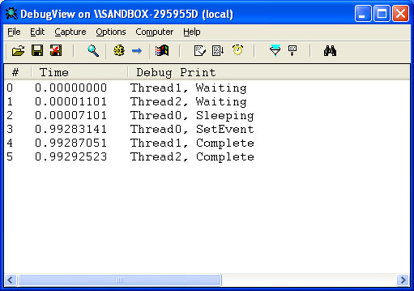

Steward
分享是一種喜悅、更是一種幸福
驅動程式 - Windows Driver Model (WDM) - 使用範例 - C/C++ (DDK) - Use Event
參考資訊：
https://wasm.in/
http://four-f.narod.ru/
https://github.com/steward-fu/ddk
main.c
#include <wdm.h>
#define DEV_NAME L"\\Device\\MyDriver"
#define SYM_NAME L"\\DosDevices\\MyDriver"
#define MAX_THREAD 3
KEVENT myEvent = {0};
PVOID pThread[MAX_THREAD] ={0};
PDEVICE_OBJECT pNextDevice = NULL;
void MyThread(PVOID pParam)
{
int t = (int)pParam;
NTSTATUS status = 0;
LARGE_INTEGER stTime = { 0 };
switch (t) {
case 0:
stTime.HighPart |= -1;
stTime.LowPart = -10000000;
DbgPrint("Thread%d, Sleeping", t);
KeDelayExecutionThread(KernelMode, FALSE, &stTime);
DbgPrint("Thread%d, SetEvent", t);
KeSetEvent(&myEvent, IO_NO_INCREMENT, FALSE);
break;
default:
DbgPrint("Thread%d, Waiting", t);
status = KeWaitForSingleObject(&myEvent, Executive, KernelMode, FALSE, NULL);
DbgPrint("Thread%d, Complete", t);
break;
}
PsTerminateSystemThread(STATUS_SUCCESS);
}
NTSTATUS AddDevice(PDRIVER_OBJECT pMyDriver, PDEVICE_OBJECT pPhyDevice)
{
PDEVICE_OBJECT pMyDevice = NULL;
UNICODE_STRING usDeviceName = { 0 };
UNICODE_STRING usSymbolName = { 0 };
RtlInitUnicodeString(&usDeviceName, DEV_NAME);
IoCreateDevice(pMyDriver, 0, &usDeviceName, FILE_DEVICE_UNKNOWN, 0, FALSE, &pMyDevice);
RtlInitUnicodeString(&usSymbolName, SYM_NAME);
IoCreateSymbolicLink(&usSymbolName, &usDeviceName);
pNextDevice = IoAttachDeviceToDeviceStack(pMyDevice, pPhyDevice);
pMyDevice->Flags &= ~DO_DEVICE_INITIALIZING;
pMyDevice->Flags |= DO_BUFFERED_IO;
return STATUS_SUCCESS;
}
void Unload(PDRIVER_OBJECT pMyDriver)
{
pMyDriver = pMyDriver;
}
NTSTATUS IrpPnp(PDEVICE_OBJECT pMyDevice, PIRP pIrp)
{
int cc = 0;
UNICODE_STRING usSymbolName = {0};
PIO_STACK_LOCATION pStack = IoGetCurrentIrpStackLocation(pIrp);
if (pStack->MinorFunction == IRP_MN_REMOVE_DEVICE) {
for (cc = 0; cc < MAX_THREAD; cc++) {
if (pThread[cc] != NULL) {
KeWaitForSingleObject(pThread[cc], Executive, KernelMode, FALSE, NULL);
ObDereferenceObject(pThread[cc]);
}
}
RtlInitUnicodeString(&usSymbolName, SYM_NAME);
IoDeleteSymbolicLink(&usSymbolName);
IoDetachDevice(pNextDevice);
IoDeleteDevice(pMyDevice);
IoCompleteRequest(pIrp, IO_NO_INCREMENT);
return STATUS_SUCCESS;
}
IoSkipCurrentIrpStackLocation(pIrp);
return IoCallDriver(pNextDevice, pIrp);
}
NTSTATUS DriverEntry(PDRIVER_OBJECT pMyDriver, PUNICODE_STRING pMyRegistry)
{
int cc = 0;
HANDLE hThread = 0;
NTSTATUS status = 0;
pMyDriver->MajorFunction[IRP_MJ_PNP] = IrpPnp;
pMyDriver->DriverExtension->AddDevice = AddDevice;
pMyDriver->DriverUnload = Unload;
KeInitializeEvent(&myEvent, NotificationEvent, FALSE);
for (cc = 0; cc < MAX_THREAD; cc++) {
status = PsCreateSystemThread(&hThread, THREAD_ALL_ACCESS, NULL, (PHANDLE)-1, NULL, MyThread, (PVOID)cc);
if (status == STATUS_SUCCESS) {
ObReferenceObjectByHandle(hThread, THREAD_ALL_ACCESS, NULL, KernelMode, &pThread[cc], NULL);
ZwClose(hThread);
}
}
return STATUS_SUCCESS;
}
完成
